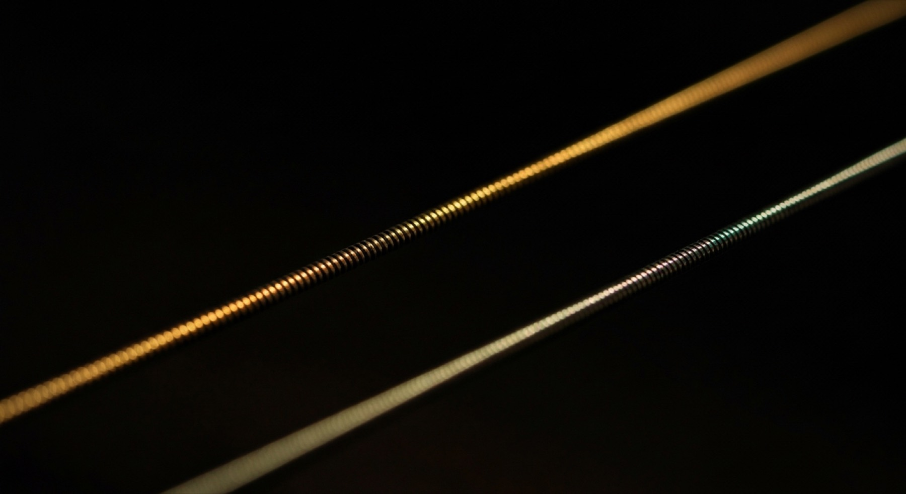

Zariia
A track plays for anyone and sounds whole. Held with the key, a second channel unlocks and plays in sync. What you hear then is the complete work.
A label, a format, and no releases yet.
Zariia is a label for music that carries a sealed second channel. The open track will be a real song — whole, free, worth hearing on its own terms. The key opens the complete one. Nothing has been released yet, and Releases says so plainly.
The sealed channel is encrypted, not buried. Anyone inspecting the file can see it is there. That is intended. What the key protects is the hearing, and the key passes from person to person rather than from a server.
Presence open. Content keyed.
None of this is a new arrangement, and the accurate claim is the smaller one. One thing said in the open and another said only to whoever is in the room — that is how private gatherings have always worked. The party you hear about afterwards. The evening somebody who was going told you about. Zariia does not invent that. It writes it down and builds a carrier for it.
A block sitting in plain view in the file, legible as a block, saying nothing at all about what is inside it.
Nothing here hides. The lock is the whole mechanism, and the lock is visible.

Six ways in.
The object
How one file carries two channels, why an ordinary player is untroubled by it, and the three states a release lives in.
02The player
Drop a file and hear it. The open song lights; the sealed vessel stands cold beside it until the key fills it.
03The name
Zaireeka, a borrowed syllable that outlived its country, and ज़रिया — the means by which.
04The history
Programs broadcast on the radio, handsets in rubber cups, twelve radios in 1951. A recapitulation rather than an invention.
05The rooms
How the sessions are put together, whom to invite, and the ways an invited room goes wrong.
06Releases
Nothing yet, and said plainly. The carrier works; the music has not been made.
The music travels freely. What passes person to person is the key.
Possession is universal. Hearing the whole thing is keyed.
This inverts an older arrangement. Cassette culture gated the object: you got the tape by being in the scene, and once you held it you heard everything. Zariia moves the membrane inward — the object travels completely freely, and the gate sits at the hearing.
The nearer relatives are the double-voiced traditions. A language spoken in the open, meaning one thing to the room and another to the person it was for. Nothing is concealed. What is gated is the reading.
Nobody joins a community. People turn up for a record.
Scenes are not founded. They accrete, and what they accrete around is always an occasion — a night, a shop, a label, a song somebody made you listen to. The occasion does the real work, and it only works while nobody treats it as a means to an end. A gathering that announces itself as a gathering repels the people it wants.
So the music is the pretext. You come for the song, which is whole and worth the trip on its own terms. Having come, you find there is more of it than you could hear, and that somebody has the key.
The discovery that an undercurrent exists, and that it can be entered, is the thing being offered. It cannot be handed over as a proposition. It has to be found.
This is also what the name says. Said the ordinary way, Zariia lands on ज़रिया — zariya: the means by which something travels, and the occasion for turning up. More on the name ▸